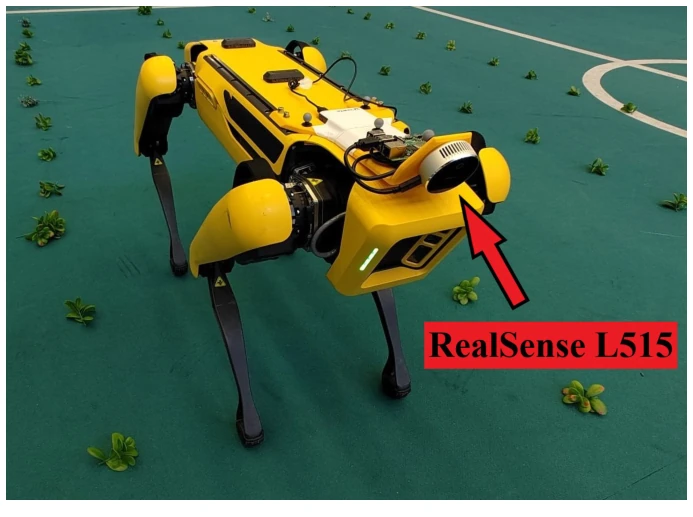
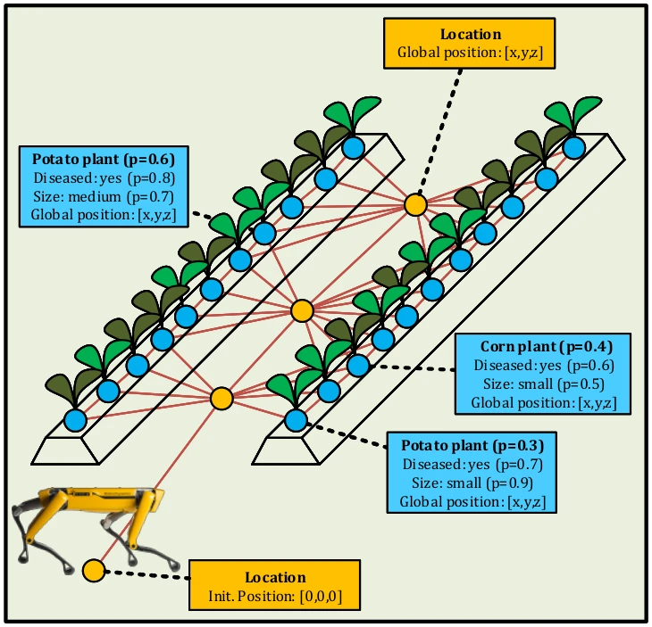
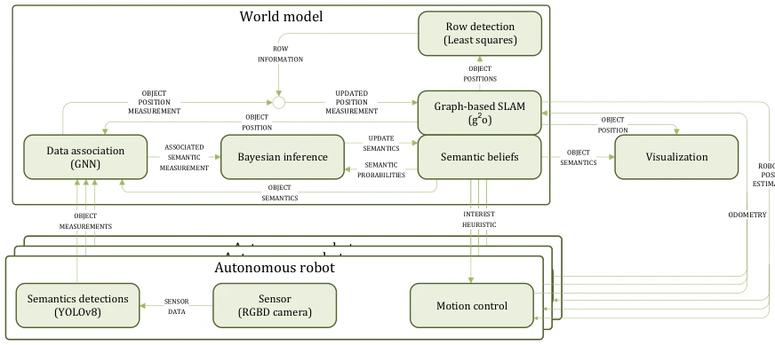
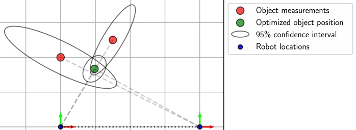
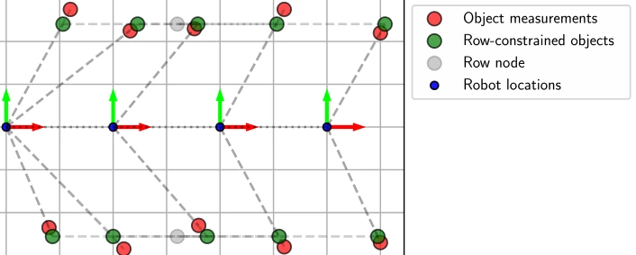
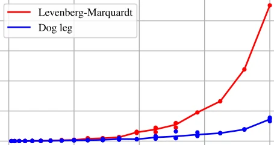
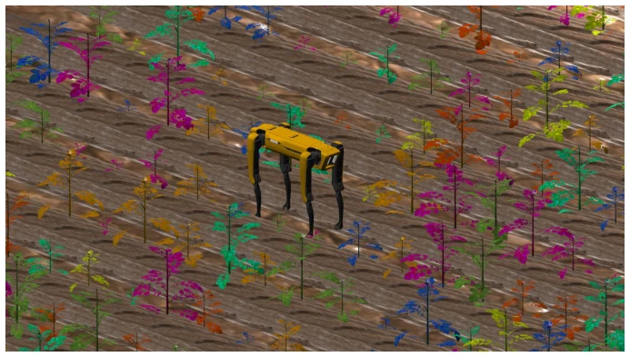
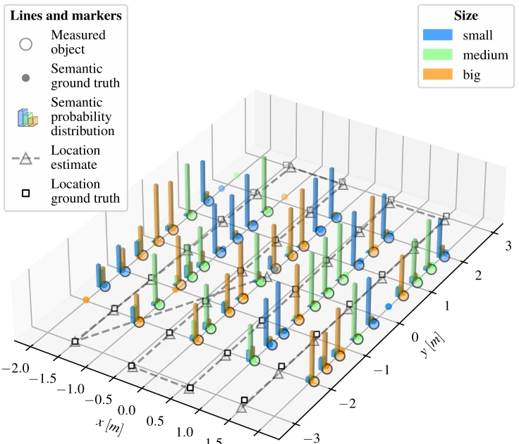
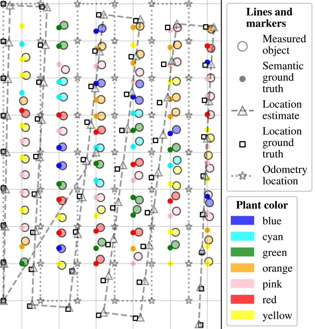
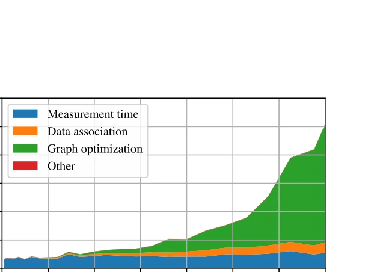

This paper sketches a "semantic pie in the sky" for agricultural robots, attempting to enable the Spot dog to not only recognize paths but also crops in the field. The highlight lies in combining SLAM with Bayesian inference, utilizing g2o for graph optimization, and developing an "interest heuristic" based on the free energy principle for active exploration. However, a critique is that the so-called "real-time" optimization time collapses when exceeding 400 objects, and experiments were all conducted in an indoor artificial plant field; what about lighting and occlusion in actual fields? It is a fact that GPS is unreliable, but is relying entirely on visual semantics truly robust enough in complex farmland? This is more like a technical verification demo, still far from large-scale deployment, especially the depth estimation bias and GNN hard decision limitations remain unresolved, and it assumes a flat environment, actual field terrain is complex, generalization ability is questionable.
研究动机Motivation
精准农业需要自动化，但传统 GPS 在作物遮挡下不可靠，且大型机械伤土。Aguiar et al. (2020) 指出农业领域缺乏成熟的语义映射技术。现有 SLAM 多为几何式，不懂“这是什么植物”。作者想解决的是在无 GPS 环境下，让机器人通过语义理解（如作物类型、健康度）来构建地图并决策。这不仅能减少化肥使用，还能实现间作（intercropping）的精细管理。现有方法难以处理动态环境和多传感器融合，导致机器人无法在个体植物层面进行精准作业，限制了精准农业的效率提升，且缺乏对不确定性的量化管理。
Precision agriculture requires automation, but traditional GPS is unreliable under crop occlusion, and large machinery damages soil. Aguiar et al. (2020) point out that the agricultural field lacks mature semantic mapping technology. Existing SLAM is mostly geometric, not understanding "what plant this is". The authors aim to solve the problem of enabling robots to build maps and make decisions through semantic understanding (such as crop type, health) in GPS-less environments. This can not only reduce fertilizer use but also achieve fine management of intercropping (intercropping). Existing methods struggle to handle dynamic environments and multi-sensor fusion, leading to robots being unable to perform precise operations at the individual plant level, limiting the efficiency improvement of precision agriculture, and lacking quantitative management of uncertainty.

Figure 4: Spot with an L515 RealSense camera on the indoor field with artificial plants
The overall workflow is: YOLOv8n detection -> GNN data association -> Semantic update (Bayesian for discrete, Kalman for continuous) -> g2o localization -> Interest heuristic navigation. Innovations lie in: 1. Unified processing of probabilistic updates for discrete (type) and continuous (size) semantics, discrete variables use Bayesian posterior, continuous variables use Kalman filter, and introduce entropy terms to quantify uncertainty; 2. Utilizing row information (row information) as soft constraints to optimize position estimation, calculating row parameters via least squares method, connecting plant nodes with row nodes; 3. Combining free energy principle to calculate uncertainty, guiding robots to revisit high entropy areas. Data association uses GNN hard decision, simplifying computation but sacrificing some robustness. Additionally, for depth bias, mitigated by coupling larger variance. Framework supports multi-robot, but relies on centralized data association. Graph optimization uses g2o library, nodes divided into robot pose and object position, edges contain measurement information matrix, supporting loop closure detection.

Figure 2: Visual representation of the proposed framework

Figure 3: Software flow of the proposed framework

Figure 6: ‘Line intersection’ optimization for two object measurements for the same object

Figure 7: Using prior knowledge about rows by adding a soft constraint between plants and a row
Validated on Gazebo simulation and indoor Spot experiment (artificial plants). Metrics include localization accuracy, semantic estimation accuracy, computation time. Results show real-time operation within 400 plants, but optimization time rises significantly with increasing quantity, exceeding 400 objects may affect real-time performance. Simulation distinguishes plant types by color, indoor experiment uses RealSense L515. Found depth estimation has bias, but mitigated through graph optimization. Proved framework feasibility, but generalization unverified. Ablation experiments not detailed, mainly compared time costs of different optimization algorithms. Experiments show in flat environment, combining row constraints can significantly improve localization accuracy, but performance in complex terrain unknown, and multi-robot communication latency impact not tested.

Figure 5: Time scaling of optimization algorithms (Levenberg-Marquardt and Powell’s dog leg method) for increasing number of objects.

Figure 8: Boston Dynamics Spot in a Gazebo simulator with artificial colored plants

Figure 9: Simulation example where the size probability distribution is visualized with the use of 3D- histograms

Figure 10: Odometry noise cancellation for a simulation starting at the left bottom (−2.5, −4), and ending at the right bottom of the figure (∼2.5, ∼−5).

Figure 13: Computation time per time step for different numbers of plants, decomposed in different steps of the proposed framework